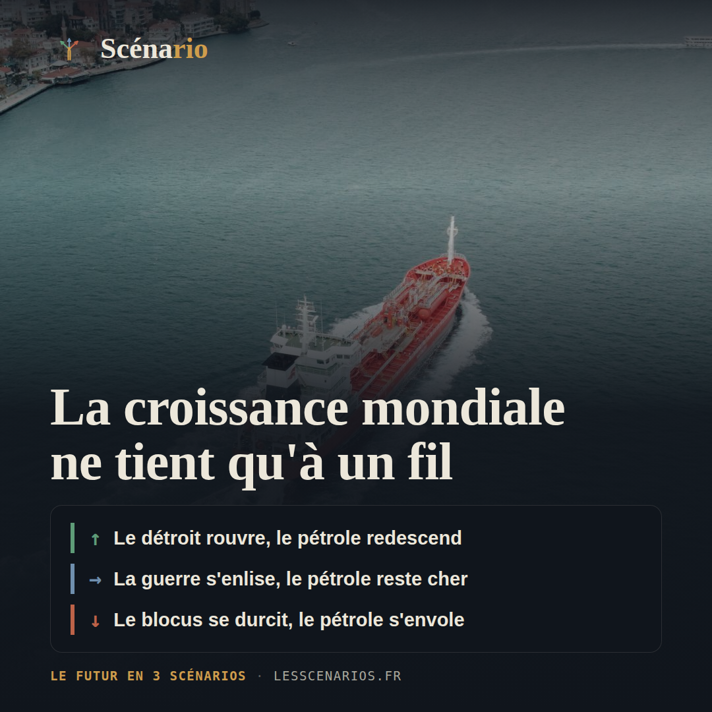
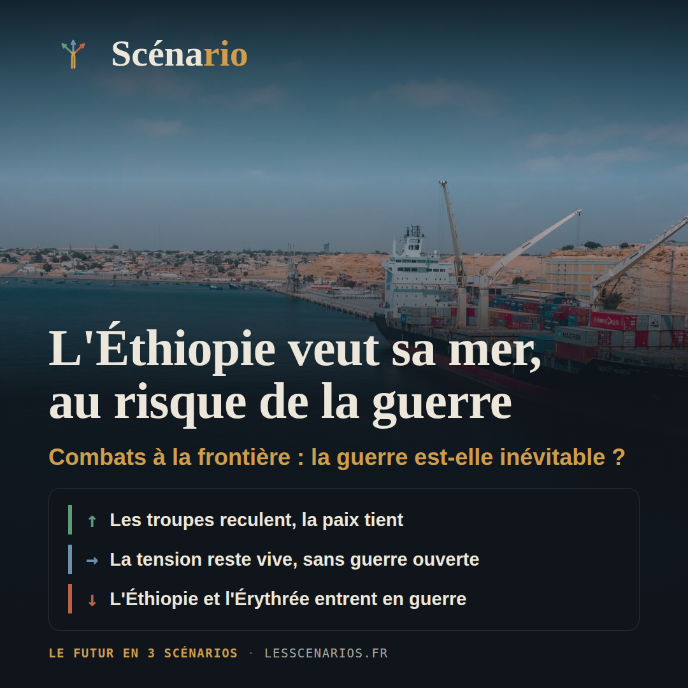
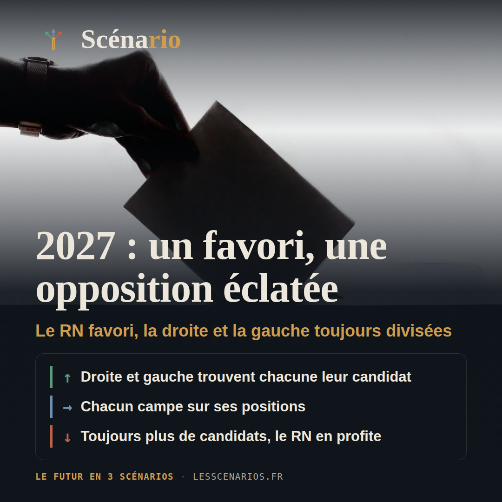
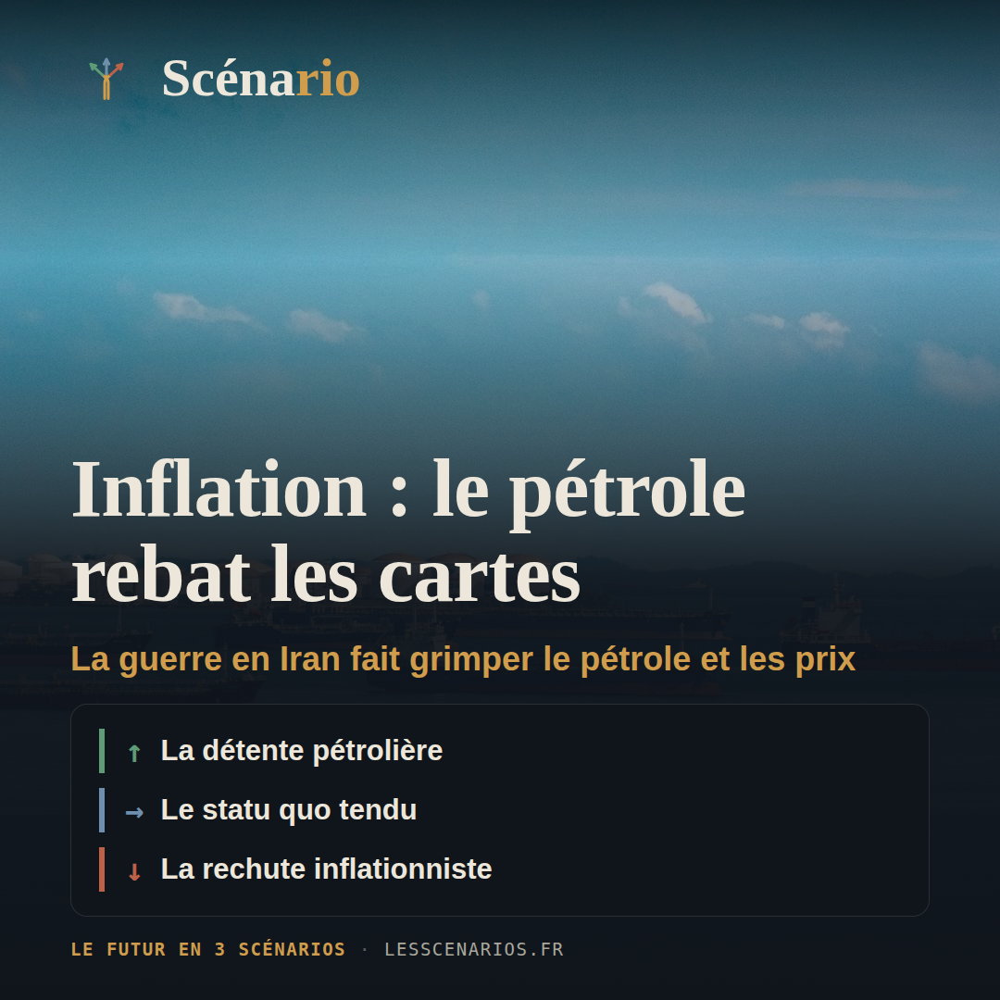
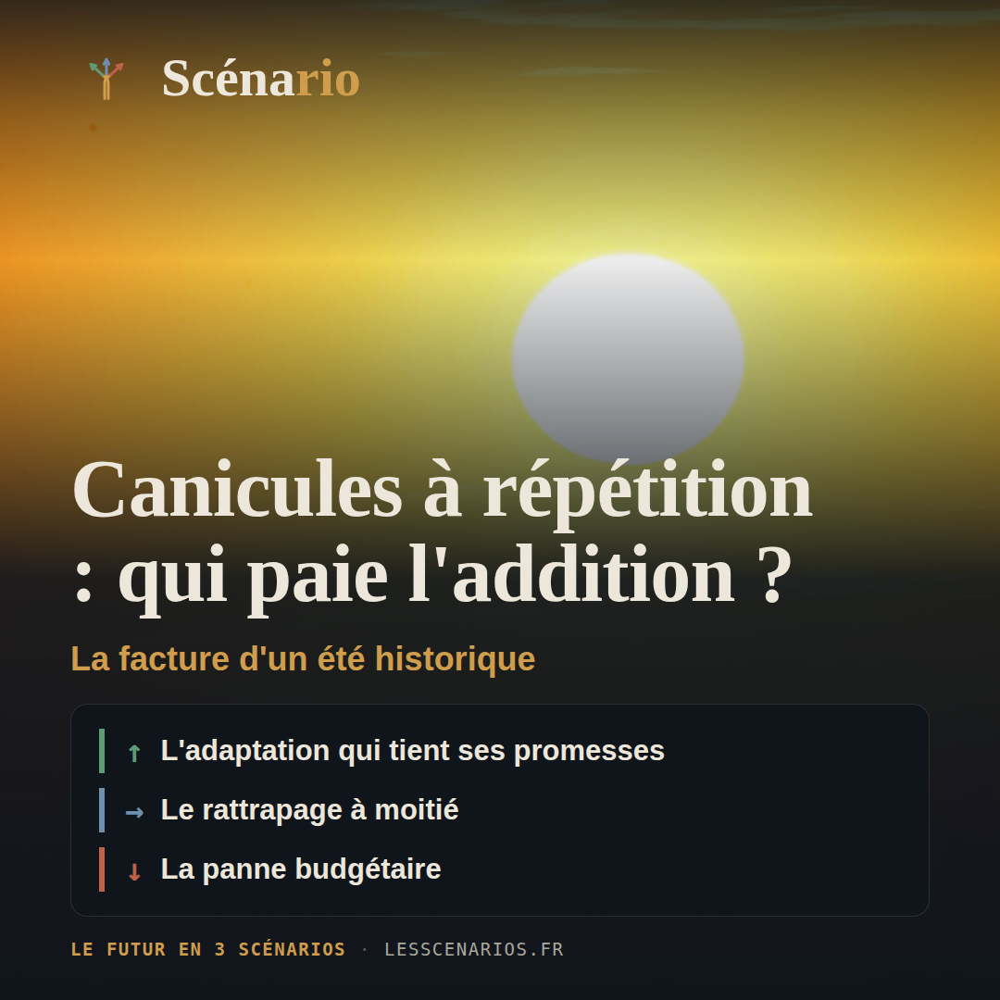
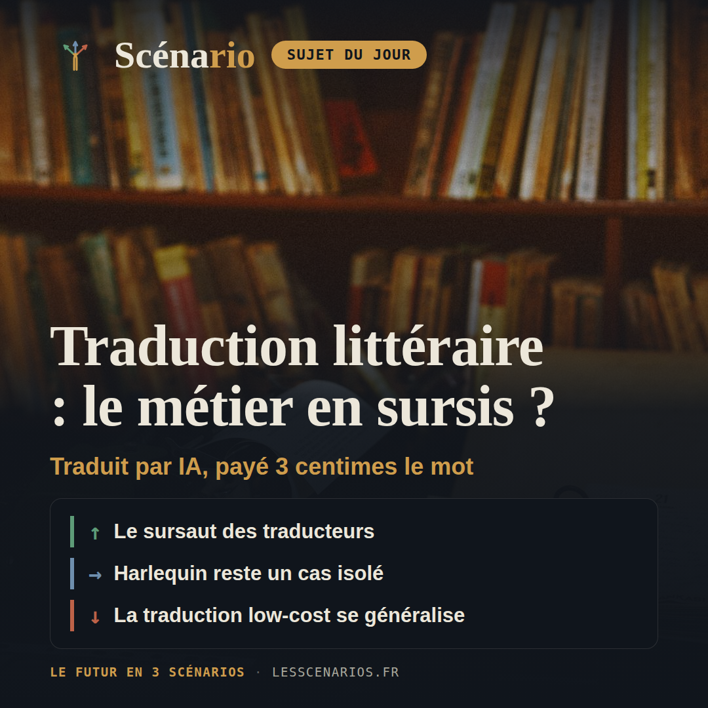
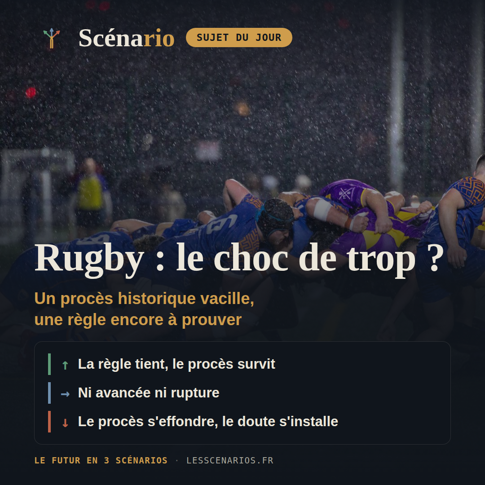

Récap hebdo
10 août au 16 août 2026 — sept sujets, sept fois trois scénarios chiffrés.
Lundi, géopolitique international

❓ Alors que la guerre en Iran a fait grimper le baril à plus de 100 dollars cet été et laisse le détroit d'Ormuz quasiment paralysé, l'économie mondiale va-t-elle absorber le choc grâce au boom des investissements dans l'IA, ou la guerre va-t-elle finir par faire basculer la croissance vers la récession ?
20%Le détroit rouvre, le pétrole redescend
55%La guerre s'enlise, le pétrole reste cher
25%Le blocus se durcit, le pétrole s'envole
Mardi, sujet libre

❓ Après l'irruption filmée de soldats érythréens, drapeau déployé, dans la ville éthiopienne de Zalambesa le 3 août, et des combats meurtriers dans le Tigré trois jours plus tôt, l'Éthiopie et l'Érythrée vont-elles éviter de retomber en guerre, quatre ans seulement après la fin de l'une des plus meurtrières de ce siècle ?
15%Les troupes reculent, la paix tient
50%La tension reste vive, sans guerre ouverte
35%L'Éthiopie et l'Érythrée entrent en guerre
Mercredi, actualité française

❓ Alors que Marine Le Pen vient d'être reconnue éligible en appel et que le Rassemblement national caracole autour de 35 % dans les sondages, la droite et la gauche vont-elles réussir à se ranger chacune derrière un seul candidat d'ici le printemps, ou la présidentielle 2027 va-t-elle battre le record de fragmentation de 2002 (16 candidats) ?
20%Droite et gauche trouvent chacune leur candidat
45%Chacun campe sur ses positions
35%Toujours plus de candidats, le RN en profite
Jeudi, économie & finance mondiale

❓ Alors que la Fed se prépare à baisser ses taux en septembre et que la BCE, elle, vient de relever les siens pour la première fois en trois ans, le choc pétrolier provoqué par la guerre en Iran va-t-il relancer l'inflation mondiale, que la Banque mondiale évoquait déjà à 4,5 % dans son pire scénario ?
25%La détente pétrolière
45%Le statu quo tendu
30%La rechute inflationniste
Vendredi, sciences

❓ Après un été qui a déjà coûté entre 10 et 15 milliards d'euros et fait au moins 5 764 morts en excès en deux semaines, le budget 2027 va-t-il enfin financer l'adaptation de la France à ces vagues de chaleur à répétition, ou le Fonds vert va-t-il rester bloqué à son plus bas niveau depuis sa création ?
25%L'adaptation qui tient ses promesses
45%Le rattrapage à moitié
30%La panne budgétaire
Samedi, culture

Depuis que Harlequin a basculé sa collection de romans à l'eau de rose vers la traduction automatique et que la loi censée mieux protéger les auteurs français reste bloquée au Parlement, le reste de l'édition va-t-il suivre le même chemin, ou les traducteurs et écrivains vont-ils réussir à préserver leur place face à l'IA ?
20%Le sursaut des traducteurs
50%Harlequin reste un cas isolé
30%La traduction low-cost se généralise
Dimanche, sport

Le rugby affronte deux dossiers séparés sur la sécurité de ses joueurs. D'un côté, le plus grand procès de son histoire sur les commotions cérébrales, devant la justice britannique. De l'autre, une nouvelle règle qui abaisse la hauteur légale de plaquage — née en France, désormais obligatoire dans le monde amateur, mais pas encore chez les professionnels. Le rugby va-t-il réussir à rendre son jeu plus sûr sans se renier, ou les deux dossiers vont-ils déraper au même moment ?
20%La règle tient, le procès survit
45%Ni avancée ni rupture
35%Le procès s'effondre, le doute s'installe
Conclusion de la semaine
Cette semaine, plusieurs dossiers avancent sans se dénouer : le Parlement n'a toujours pas voté la loi censée protéger les traducteurs français de la traduction automatique, pendant que Harlequin a déjà basculé sa collection Azur ; en rugby, la nouvelle règle sur la hauteur de plaquage reste obligatoire chez les amateurs mais pas encore chez les professionnels ; le budget 2027 ne finance qu'à moitié l'adaptation aux canicules, après un été qui a déjà coûté entre 10 et 15 milliards d'euros et fait au moins 5 764 morts en excès en deux semaines ; et la guerre en Iran continue de peser à la fois sur la croissance mondiale et sur l'inflation, sans qu'aucune des deux tendances ne se dénoue. Le fil commun de la semaine : des décisions qui tardent, pendant que les faits sur le terrain avancent déjà.